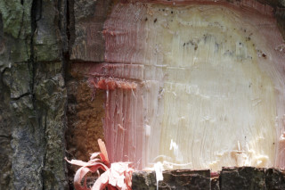
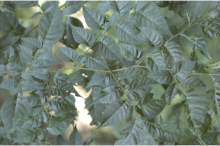
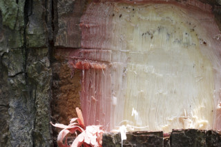
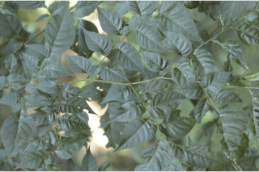
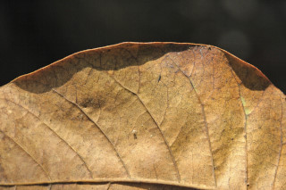
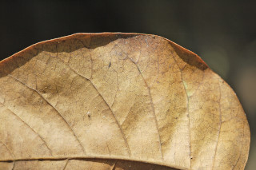
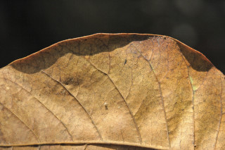
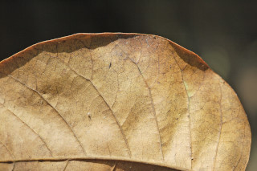

Tall deciduous trees, up to 30 m tall.
30 ಮೀ. ಎತ್ತರದವರೆವಿಗೆ ಬೆಳೆಯುವ ಎಲೆಯುದುರು ಮಾದರಿಯ ಮರಗಳು.
Tall deciduous trees, up to 30 m tall.
மிகப்பெரிய இலையுதிர் மரம் , முதல் 30 மீ. உயரம் வரை வளரக்கூடியது.
Bark reddish-brown with thin irregular flakes; blaze reddish.
ತೊಗಟೆ ಕೆಂಪು ಮಿಶ್ರಿತ ಕಂದು ಬಣ್ಣ ಹೊಂದಿದ್ದು ತೆಳುವಾದ ಹಾಗೂ ಅವ್ಯವಸ್ಥಿತ ಚಕ್ಕೆಗಳ ಸಮೇತವಾಗಿರುತ್ತದೆ;ಕಚ್ಚು ಮಾಡಿದ ಜಾಗ ಕೆಂಪಾಗಿರುತ್ತದೆ.
Bark reddish-brown with thin irregular flakes; blaze reddish.
மரத்தின் பட்டை சிவப்பு-ப்ரவுன் நிறமானது மெல்லிய ஒழங்கற்ற செதில்களாக உதிருபவை; உள்பட்டை சிவப்பு நிறமானது.
Young branchlets terete, lenticellate, greyish velvety pubescent.
ಕಿರುಕಂಬೆಗಳು ದುಂಡಾಗಿದ್ದು,ಸೂಕ್ಷ್ಮ ವಾಯು ವಿನಿಮಯ ರಂಧ್ರ ಸಮೇತವಿದ್ದು, ಬೂದು ಬಣ್ಣದ ಮಖಮಲ್ಲಿನ ರೀತಿಯ ದಟ್ಟ ಮೃದು ತುಪ್ಪಳದಿಂದ ಕೂಟಿರುತ್ತವೆ.
Young branchlets terete, lenticellate, greyish velvety pubescent.
சிறியநுனிக்கிளைகள் குறுக்குவெட்டுத் தோற்றத்தில் வளையமானது, பட்டைத்துளைகள் (லெண்டிசெல்லேட்) உடையது, சாம்பல் நிற மெண்மையான உரோமங்களுடையது.
Leaves compound, paripinnate, 12-50 cm long, alternate, spiral, pulvinate; rachis 16 cm long, pubescent; petiolule 0.2-1 cm long; leaflets 10-24, alternate or subopposite, (sometimes 1 or 2 pairs when young), 5-13 x 2.5-6.5 cm, often lower leaflets are smaller than above, narrow ovate to lanceolate, apex narrowly acuminate, base asymmetric, margin entire, chartaceous, pubescent beneath; midrib flat above; secondary_nerves 6-8 pairs, often forked; tertiary_nerves broadly reticulate or obscure.
ಎಲೆಗಳು ಸಂಯುಕ್ತ ಮಾದರಿಯವು, ಸಮಸಂಖ್ಯಾ ಗರಿ ರೂಪಿಗಳಾಗಿದ್ದು 12 ರಿಂದ 50 ಸೆಂ.ಮೀ.ಉದ್ದ ಹೊಂದಿದ್ದು ಪರ್ಯಾಯ ಮತ್ತು ಸುತ್ತು ಜೋಡನಾ ವ್ಯವಸ್ಥೆಯಲ್ಲಿದ್ದು ಉಬ್ಬಿದ ಎಲೆ ಬುಡವನ್ನು ಹೊಂದಿರುತ್ತವೆ;ಸಂಯುಕ್ತ ಪರ್ಣದ ನಡು ದಿಂಡು 16 ಸೆಂ ಮೀ. ಉದ್ದವಿದ್ದು ದಟ್ಟ ಮೃದು ತುಪ್ಪಳದಿಂದ ಕೂಡಿರುತ್ತದೆ; ಕಿರುತೊಟ್ಟು0.2 ರಿಂದ 1 ಸೆಂ.ಮೀ. ಉದ್ದವಿರುತ್ತವೆ; ಕಿರುಪತ್ರಗಳು 10 ರಿಂದ 24ಇದ್ದು ಪರ್ಯಾಯ ಅಥವಾ ಉಪ-ಅಭಿಮುಖಿಗಳಾಗಿರುತ್ತವೆ(ಕೆಲವು ವೇಳೆ ಎಳೆಯದಾಗಿದ್ದಾಗ 1 ಅಥವಾ 2 ಜೋಡಿಗಳಿರುತ್ತವೆ) , ಗಾತ್ರ 5--13 X 2.5-6.5 ಸೆಂ.ಮೀ., ಹಲವು ವೇಳೆ ಕೆಳಗಿನ ಕಿರು ಪತ್ರಗಳು ಮೇಲಿನವುಗಳಿಗಿಂತ ಸಣ್ಣದಾಗಿರುತ್ತವೆ,ಸಂಕುಚಿತ ಅಂಡಾಕೃತಿಯಿಂದ ಈಟಿ ಆಕಾರ ಹೊಂದಿದ್ದು, ಸಂಕುಚಿತ ಹಾಗೂ ಕ್ರಮೇಣವಾಗಿ ಚೂಪಾಗುವ ತುದಿ,ಅಸಮ್ಮಿತಿಯಾದ ಬುಡ,ನಯವಾದ ಅಂಚು,ಕಾಗದವನ್ನೋಲುವ ಮೇಲ್ಮೈ ಹೊಂದಿದ್ದು ತಳಭಾಗ ದಟ್ಟ ಮೃದು ತುಪ್ಪಳದಿಂದ ಕೂಡಿರುತ್ತವೆ;ಮಧ್ಯನಾಳ ಪತ್ರದ ಮೇಲ್ಭಾಗದಲ್ಲಿ ಚಪ್ಪಟೆಯಾಗಿರುತ್ತದೆ;ಎರಡನೇ ದರ್ಜೆಯ ನಾಳಗಳು 6 ರಿಂದ 8 ಜೋಡಿಗಳಿದ್ದು ಹಲವು ವೇಳೆ ಕವಲುಗೊಂಡಿರುತ್ತವೆ;ಮೂರನೇ ದರ್ಜೆಯ ನಾಳಗಳು ವಿಶಾಲ ಜಾಲಬಂಧ ನಾಳವಿನ್ಯಾಸ ಹೊಂದಿರುತ್ತವೆ ಅಥವಾ ಅಸ್ಪಷ್ಟವಾಗಿರುತ್ತವೆ.
Leaves compound, paripinnate, 12-50 cm long, alternate, spiral, pulvinate; rachis 16 cm long, pubescent; petiolule 0.2-1 cm long; leaflets 10-24, alternate or subopposite, (sometimes 1 or 2 pairs when young), 5-13 x 2.5-6.5 cm, often lower leaflets are smaller than above, narrow ovate to lanceolate, apex narrowly acuminate, base asymmetric, margin entire, chartaceous, pubescent beneath; midrib flat above; secondary_nerves 6-8 pairs, often forked; tertiary_nerves broadly reticulate or obscure.
கூட்டிலை, இரட்டைபடை சிறகுவடிவக்கூட்டிலை (பேரிப்பின்னேட்), 12-50 செ.மீ. நீளமானது, மாற்றுஅடுக்கமானவை, சுழல் போல் அமைந்தது, பல்வினேட்; மத்தியகாம்பு 16 செ.மீ. நீளமானது, உரோமங்களுடையது; சிற்றிலைக்காம்பு 0.2-1 செ.மீ. நீளமானது; சிற்றிலைகள் 10-24, மாற்றுஅடுக்கமானவை அல்லது கிட்டத்தட்ட எதிரடுக்கமானவை , (இளம்பருவத்தில் சிலசமயங்களில் 1 அல்லது 2 ஜோடிகளுடையது), 5-13 X 2.5-6.5 செ.மீ., தளத்திலுள்ள சிற்றிலைகள் சிறியவை, குறுகிய முட்டை வடிவானது முதல் ஈட்டி வடிவானது, அலகின் நுனி குறுகிய அதிக்கூரியது, அலகின் தளம் சமமற்றது, அலகின் விளிம்பு முழுமையானது, சார்ட்டேசியஸ், உரோமங்களுடையது; மையநரம்பு மேற்பரப்பில் அலகின் பரப்பிற்கு சமமானது; இரண்டாம் நிலை நரம்புகள் 6-8 ஜோடிகள், கிளைத்தவை; மூன்றாம் நிலை நரம்புகள் அகன்ற வலைப்பின்னல் போன்றவை அல்லது கண்களுக்கு புலப்படாது.
Inflorescence in terminal panicles, greyish velvety pubescent; flowers cream.
ಪುಷ್ಪಮಂಜರಿ ತುದಿಯಲ್ಲಿದ್ದು ಪುನರಾವೃತ್ತಿಯಾಗಿ ಕವಲೊಡೆಯುವ ಮಾದರಿಯಲ್ಲಿದ್ದು ಬೂದು ಬಣ್ಣದ ಮಖಮಲ್ಲಿನ ರೀತಿಯ ದಟ್ಟ ಮೃದು ತುಪ್ಪಳದಿಂದ ಕೂಡಿರುತ್ತದೆ;ಹೂಗಳು ಕೆನೆ ಬಣ್ಣದವು.
Inflorescence in terminal panicles, greyish velvety pubescent; flowers cream.
மஞ்சரி தண்டின் நுனியில் காணப்படும் பேனிக்கிள் , சாம்பல் நிற மெண்மையான உரோமங்களுடையது; மலர்கள் கிரீம் நிறமானது.
Capsule, globose, to 4 cm across, 4-5 valved, glabrous; seeds many, broadly winged at base.
ಸಂಪುಟ ಫಲ ಗೋಳಾಕಾರದಲ್ಲಿದ್ದು 4 ಸೆಂ.ಮೀ.ವರೆಗಿನ ಅಡ್ಡಳತೆಯನ್ನು ಹೊಂದಿದ್ದು,4 ರಿಂದ 5 ಕೋಶಗಳ ಸಮೇತವಿರುತ್ತದೆ ಹಾಗೂ ರೋಮರಹಿತವಾಗಿರುತ್ತದೆ;ಬೀಜ ಹಲವಾರು ಇದ್ದು ಬುಡದಲ್ಲಿ ವಿಶಾಲವಾದ ರೆಕ್ಕೆ ಸಮೇತವಿರುತ್ತದೆ.
Capsule, globose, to 4 cm across, 4-5 valved, glabrous; seeds many, broadly winged at base.
வெடிகனி (கேப்சியூல்), கோளவடிவானது, முதல் 4 செ.மீ. குறுக்களவுடையது, 4-5 அறைகளுடையது, உரோமங்களற்றது; விதைகள் எண்ணற்றவை, தளத்தில் அகன்ற சிறகுடையது.
 




 


